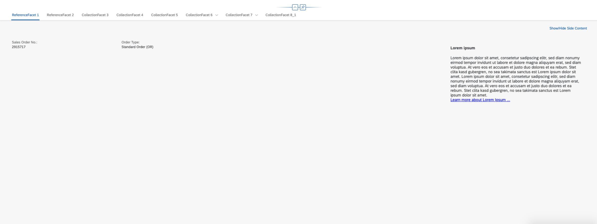
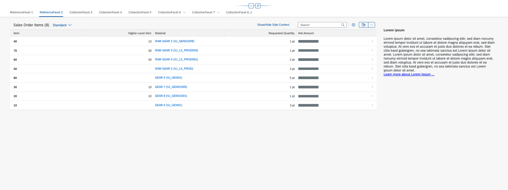
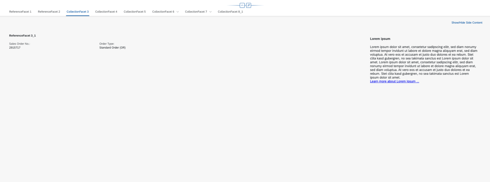
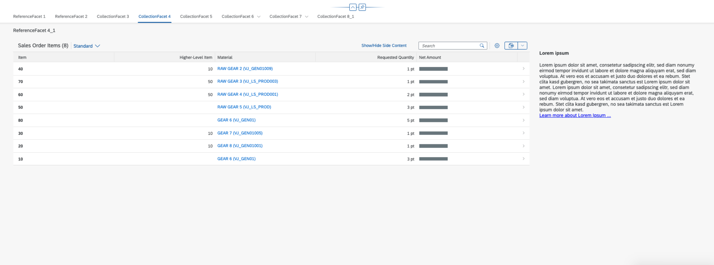
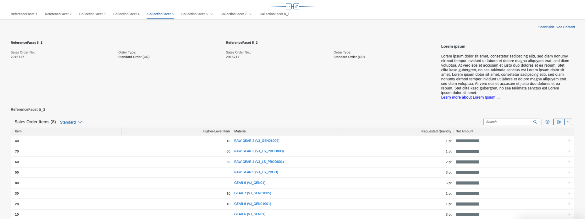
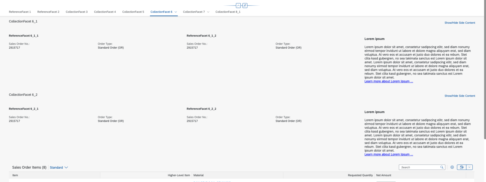
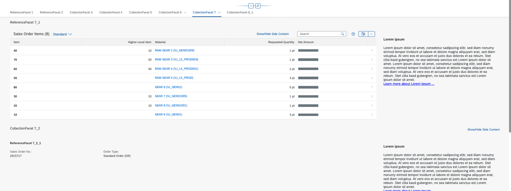
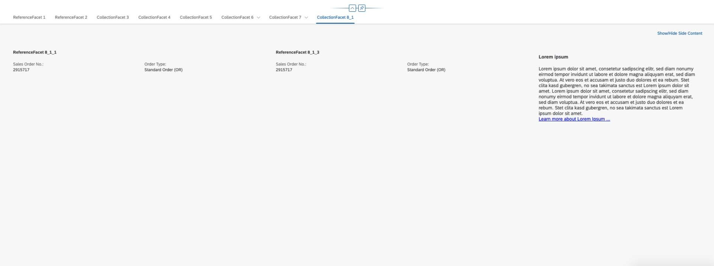

You can use extension points to add additional content to sections.
Use app extensions with caution and only if you cannot produce the required
behavior by other means, such as manifest settings or annotations. To correctly
integrate your app extension coding with SAP Fiori elements, use
only the extensionAPI of SAP Fiori elements. For
more information, see Using the extensionAPI.
After you've created an app extension, its display (for example, control
placement and layout) and system behavior (for example, model and binding usage,
busy handling) lies within the application's responsibility. SAP Fiori elements
provides support only for the official extensionAPI functions.
Don't access or manipulate controls, properties, models, or other internal
objects created by the SAP Fiori elements
framework.
You can use extension points to add additional content to sections in the following places:
BeforeMainContent: The extension is added before a sections'
main content.
AfterMainContent: The extension is added after the section's
main content.
Main content refers to the information that comes from the annotations.
Enter the extension information in the manifest.json of your
application in the following format:
<Different_Scenario>|<EntitySet_Name>|<Annotation_Information_of_Subsection>
Specify the extension facet in the form of the annotation information of the
subsection where side content needs to be placed. In addition, specify the entity
set name, as the same annotation may exist for various entity sets. You also need to
define the className, viewName,
type, and the optional parameter
equalSplit.
To enable the equal split mode (50:50 percent for main content vs. side content), add
the "equalSplit": true setting to the manifest.
If "equalSplit" is set to false or is not defined,
the percentage of main content and side content depends on the device on which the
app is running.
"extends": {
"extensions": {
"sap.ui.viewExtensions": {
"sap.suite.ui.generic.template.ObjectPage.view.Details": {
"AfterMainContent|STTA_C_MP_Product|GeneralInformationForm":{
"className": "sap.ui.core.Fragment",
"fragmentName": "STTA_MP.ext.fragments.SideContentExtension",
"type": "XML",
"equalSplit": true
},
"BeforeMainContent|STTA_C_MP_Product|to_ProductSalesData::com.sap.vocabularies.UI.v1.Chart":{
"className": "sap.ui.core.Fragment",
"fragmentName": "STTA_MP.ext.fragments.SideContentExtension",
"type": "XML"
}
}
}
}
}
You can specify either a view or a fragment contained in the section. You do not need
to use the object page (uxap) tags, ObjectPageSection,
subSections, or ObjectPageSubSection. These
definitions are already part of the template for the object page view.
After you have added side content, the system displays a button in the subsection toolbar to show or hide the side content. The default texts for this button are Show Details or Hide Details. If you want to provide a custom text, specify it by adding the key value pair of the custom label to the i18n.properties file of the specific entity set of the object page. The key uniquely defines the subsection for whose side content button you provide the custom text. The structure of the key is as follows:
In the annotation information of the subsection, replace all separators (-- , :: etc.) with a | (vertical bar) while forming the key.
Show the side content button
ShowSideContent|<EntitySet>|<Annotation Info of the
Subsection>
Example:
ShowSideContent|STTA_C_MP_Product|to_ProductSalesData|com.sap.vocabularies.UI.v1.Chart
ShowSideContent|STTA_C_MP_Product|GeneralInformationForm
Hide the side content button
HideSideContent|<EntitySet>|<Annotation Info of the
Subsection>
Example:
HideSideContent|STTA_C_MP_Product|to_ProductSalesData|com.sap.vocabularies.UI.v1.Chart
HideSideContent|STTA_C_MP_Product|GeneralInformationForm
Use dynamic side content for small previews. Do not consider it as an extension of the main panel's content.
Do not use tables in the side content panel.
Avoid any content that may introduce a horizontal scroll bar.
For better content visualization of the dynamic side content, use the 50% screen display of the dynamic side content.
You can add additional content in a flexible manner. When the side content is triggered, the main content is narrowed. The side content always comes from the right side of the app and provides the following features:
adding arbitrary sections via an xmlfragment definition
adding side content to sections as defined in the manifest for custom sections or facet-based sections
API for toggling the display of the side content (show/hide)
You define the side content in the manifest as follows:
for custom sections: add "sideContent" with the
"template" property pointing towards the content
xmlfragment definition
for facet-based sections: add it in the same manner under subSections sub-Section-key sideContent , or under the section where there are no subsections as under Sections section-key sideContent
{
"sap.ui5": {
"routing": {
"targets": {
"SalesOrderManageObjectPage": {
"options": {
"settings": {
"content": {
"body": {
"sections": {
"<section-key>": {
"sideContent": {
"template": "SalesOrder.ext.CustomSideContent"
}
},
"<section-key>": {
"subSections": {
"<subSection-key>": {
"sideContent": {
"template": "SalesOrder.ext.CustomSideContent",
"equalSplit": true
}
}
}
}
}
}
}
}
}
}
}
}
}
}You can define your side content by implementing an xmlfragment
and using the following properties:
| Property Name | Supported Values | Description |
|---|---|---|
| template | "<module_path_to_a_fragment>" | Defining the target fragment follows the syntax of defining a
fragment via Fragment.load |
| equalSplit | true | false | Changes the visualization of the side content: instead of
being split 1:3 / 1:2, according to responsiveness the side
content is split 1:1. For information about the layout API, see the API Reference. |
Bold formatting: default/fallback behavior
By default, the side content is not shown. SAP Fiori elements
provides an API for the side content that enables you to toggle the side content
display (show/hide):
this.showSideContent("<SideContent-Key>").
The showSideContent API accepts two parameters:
"SideContent-Key"
an optional Boolean value to explicitly define whether to show or hide side content
If no value for the parameter is provided, the API toggles the display.
manifest.json
{
"sap.ui5": {
"routing": {
"targets": {
"SalesOrderManageObjectPage": {
"options": {
"settings": {
"content": {
"controlConfiguration": {
"_Item/@com.sap.vocabularies.UI.v1.LineItem": {
"actions": {
"CustomActionToggleSideContent": {
"press": "Namespace.ext.CustomSectionSideContent.toggleSideContent",
"text": "Show/Hide Side Content",
"enabled": true,
"visible": true
}
}
}
}
}
}
}
}
}
}
}For more information about defining an action, see Adding Custom Actions Using Extension Points.
webapp/ext/customSectionSideContent.js
sap.ui.define([], function() {
"use strict";
return {
toggleSideContent: function(oBindingContext) {
this.showSideContent("<SideContent-key>");
}
};
});To explicitly define that you want to display the side content, use
this.showSideContent("customerInfo", true).
To explicitly define that you want to hide the side content, use
this.showSideContent("customerInfo", false).
For information about the regular Extension API, see the API Reference.
The following table provides an overview of all possible combinations of facet nesting and how to find the right key in each scenario:
| Scenario | Level 0 | Level 1 | Level 2 | Section-Key | SubSection-Key | SideContent-Key | How Side Content is Displayed |
|---|---|---|---|---|---|---|---|
| One level of nesting | |||||||
| 1 | Reference Facet including form (RF) | RF @ Level 0 (for example:
|
RF @ Level 0 (for example: |
RF @ Level 0 Key (for example: |
Hidden  |
||
| 2 | Reference Facet as Table (T) | RF @ Level 0 | RF @ Level 0 | RF @ Level 0 Key |
Hidden  |
||
| 3 | Collection Facet (CF) | CF @ Level 0 |
Hidden  |
||||
| 3.1 | RF | CF @ Level 0 | CF @ Level 0 Key | ||||
| 4 | CF | CF @ Level 0 |
Hidden  |
||||
| 4.1 | T | CF @ Level 0 | RF @ Level 1 Key | ||||
| 5 | CF | CF @ Level 0 |
Hidden  |
||||
| 5.1/2 | RF+RF | CF @ Level 0 | CF @ Level 0 Key | ||||
| 5.3 | T | ||||||
| Two levels of nesting | |||||||
| 6 | CF | CF @ Level 0 |
Hidden  |
||||
| 6.1 | CF | ||||||
| 6.1.1/2 | RF+RF | CF @ Level 1 | CF @ Level 1 Key | ||||
| 6.2 | CF | ||||||
| 6.2.1/2 | RF+RF | CF @ Level 1 | CF @ Level 1 Key | ||||
| 6.2.3 | T | ||||||
| 7 | CF | CF @ Level 0 |
Hidden  |
||||
| 7.1 | T | RF @ Level 1 | RF @ Level 1 Key | ||||
| 7.2 | CF | ||||||
| 7.2.1 | RF | CF @ Level 1 | CF @ Level 1 Key | ||||
| 8 | (CF - ignored) | - not displayed - | |||||
| 8.1 | CF | CF @ Level 1 |
Hidden  |
||||
| 8.1.1 | RF | CF @ Level 1 | CF @ Level 1 Key | ||||
Scenario 4.1 differs: while for all other scenarios the
SubSection-Key and the SideContent-Key
are similar, here they differ.
The equalSplit property changes the visualization of the side
content. It changes the aspect ratio of the section content in comparison to the
side content. The following images show the UI without equal split mode and with
equal split mode turned on: